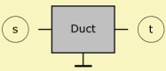

|
 |
| Purpose | Waveguide with constant cross-section |
| Type | Network element |
| Domain | Acoustic |
| Used in | System |
|
|
Duct 'Any Name'
Node=s=t
Len=
dD=
SD=
WD= HD=
Visc=
Vf=
eta=
The Duct components creates an acoustic waveguide with constant cross-sectional area in the network.
Standing waves along the waveguide are calculated and coupled to other network components according to pressure and volume-velocity. For the cross-section only the fundamental mode is used, and, hence, the shape of the cross-section is ignored.
The shape of the cross-section can be ignored if the dimension of the cross-section is smaller than the wavelength. Often this constraint can be satisfied only approximately.
When modeling enclosures with the help of Duct-components make sure that the total volume is maintained.
The duct-arithmetic yields the derivation of the lumped elements AcouMass, AcouCompliance and AcouResistance. These elements are often used in connection with the Duct in order to model bends, constrictions and compression chambers.
The Duct and Waveguide elements are similar. The difference is that the Duct has a constant cross-section area and the Waveguide has it variable. The Duct allows for volume damping.
The duct-algorithm needs some damping to be present. By default this damping is derived from basic viscosity considerations. The formula used is explained at Ra= of AcouResistance.
A closed Duct is a tube where the opposite wall is acoustically hard, i.e. where the normal velocity is zero (Neumann Condition). In acoustic potential-networks (impedance networks) this means open-loop, i.e. no connection.
Contrarily, the pressure-zero boundary condition has a short-cut of the output. However, this condition is rarely used in electro-acoustic. For convenience and compatibility reasons, if the output-terminal of the Duct is specified as a short-cut in the script then Akabak interprets this as a special case and will calculate a closed duct instead.
For convenience, the Duct is specified with only two poles in the script. The two node-numbers symbolize the two outlets of the Duct. Theoretically, the Duct is always a four-pole. However, because by principal it turns out that the Duct is always grounded (similar to the acoustic compliance) we can specify it as a two-pole and eventually expand the duct to a four-pole internally.
Example
Duct 'D1'
Node=10=20
Len=100mm
dD=10mm